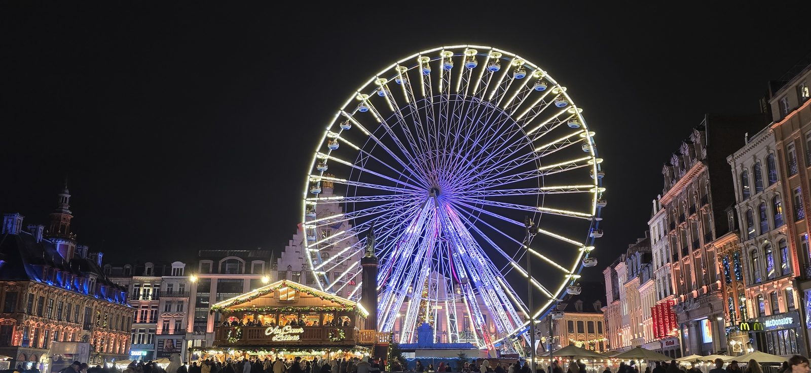
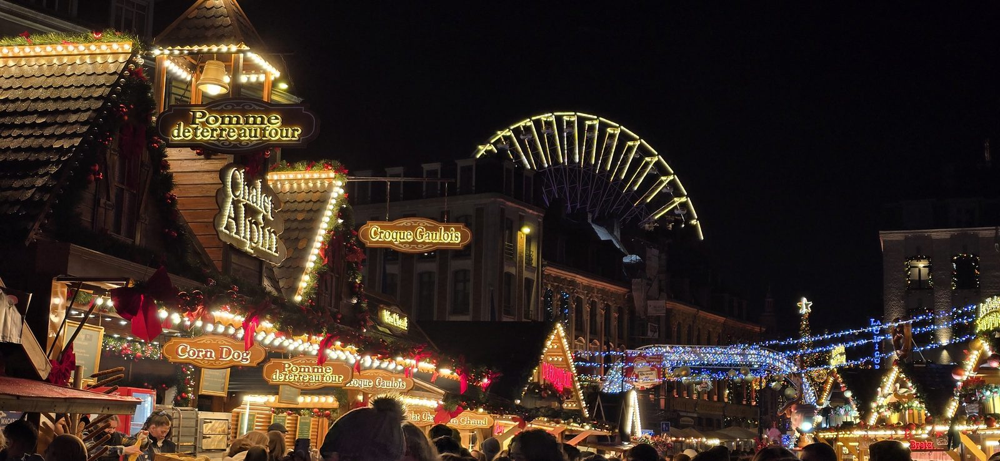

Le marché de Noël de Lille : le guide 2026
C'est le moment de l'année où Lille est la plus fréquentée, et pas seulement par les touristes : les Lillois y vont aussi, souvent plusieurs fois. Le Village de Noël occupe la place Rihour pendant six semaines, la grande roue s'installe sur la Grand'Place, et tout le centre-ville passe en mode illuminations.
Voici ce qu'il faut savoir pour en profiter sans subir la foule.

Où ça se passe exactement
Deux endroits, à deux minutes de marche l'un de l'autre :
- Place Rihour — le Village de Noël proprement dit, avec environ quatre-vingt-dix chalets en bois. C'est là que se trouvent les commerçants, les artisans et la nourriture.
- Grand'Place — la grande roue et le grand sapin. C'est le décor, pas le marché.
Les deux places se touchent presque. Si vous sortez du métro à Rihour, vous êtes littéralement au pied des chalets.
La grande roue
Cinquante mètres de haut, trente-six nacelles. Elle fait partie du paysage lillois depuis le début des années 1990 et la vue sur les toits illuminés vaut le billet — surtout à la tombée de la nuit, quand les lumières de la place prennent le dessus sur le ciel.
Mon conseil : montez-y un soir de semaine. Le samedi, la file peut facilement vous prendre quarante minutes, pour un tour qui en dure une poignée.
Ce qu'on trouve sur les chalets
Un mélange d'artisanat et de produits du Nord. Concrètement :
- Des produits du terroir — maroilles, bières régionales, miel des Flandres
- Des décorations et des jouets en bois faits par des artisans des Hauts-de-France
- De quoi manger sur le pouce : gaufres, vin chaud, churros
Comme sur tous les marchés de Noël, la qualité est inégale d'un chalet à l'autre. Les stands d'artisans locaux se repèrent assez vite : ils sont tenus par ceux qui fabriquent, et ça se voit à la façon dont ils parlent de leurs produits.

Quand y aller
C'est la question qui change tout. Le marché est le même à toute heure, l'expérience non.
- Le meilleur moment — un mardi ou mercredi soir, vers 18h. Il fait nuit, les illuminations sont allumées, et on circule.
- À éviter — le samedi après-midi, en particulier les deux week-ends avant Noël. On avance au pas dans les allées.
- Le dimanche matin est une bonne option si vous êtes avec des enfants : c'est calme, mais l'ambiance lumineuse manque.
Y aller
En métro, station Rihour, vous ressortez sur la place. Depuis la gare Lille-Flandres, c'est cinq minutes à pied par la rue Faidherbe — et vous arrivez par la Grand'Place, donc par la grande roue, ce qui est la plus jolie approche.
En voiture, oubliez le centre. Les rues autour de la Grand'Place sont fermées à la circulation le week-end, et les parkings souterrains affichent complet très vite. Garez-vous dans un parking-relais en périphérie et prenez le métro : c'est plus rapide et beaucoup moins cher.
Le budget
L'entrée du village est gratuite. Les dépenses viennent du reste : comptez quelques euros pour une gaufre ou un vin chaud, et autour de huit euros le tour de grande roue. Les tarifs exacts changent chaque année, à vérifier sur place.
Si vous en voulez d'autres
Le Nord ne manque pas de marchés de Noël, et deux valent le déplacement depuis Lille :
- Roubaix — une cinquantaine de chalets autour de l'hôtel de ville, orientés créateurs locaux. Vingt minutes en métro.
- Valenciennes — un village à thème médiéval avec des spectacles de rue. Environ quarante minutes en train.
En bref
- Dates
- [À CONFIRMER — vérifier sur lille.fr]
- Horaires
- [À CONFIRMER]
- Lieu
- Place Rihour (chalets) et Grand'Place (grande roue)
- Métro
- Station Rihour
- Entrée
- Gratuite ; attractions payantes
- Fermeture
- Le 25 décembre